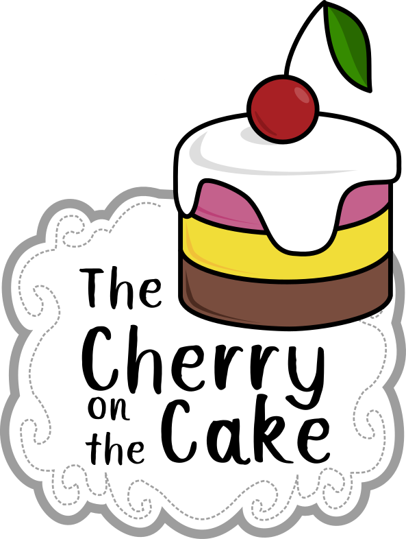

3.1.1. Sujet¶
Joyeux anniversaire la Coupe de Robotique ! Grand-mère Monique souhaite célébrer cette grande occasion en préparant des gâteaux pour tout le monde. Elle demande à ce que vous l’aidiez à préparer sa recette légendaire et à ce que tous les invités soient servis.
{kind=link}
Génoise, crème, glaçage et sans oublier la fameuse cerise, voilà de quoi cuisiner pour réjouir Grand-mère Monique. À vos cuillères !
Ces missions seront :
Faire des gâteaux.
Mettre les cerises sur les gâteaux.
Ranger les cerises restantes dans le panier.
Mettre les roues dans le plat, à la fin du service.
Se déguiser pour faire la fête.
Calculer l’addition.
{kind=link}
3.1.2. Choix¶
3.1.2.1. Généralités¶
Nous tentons de faire deux robots cette année. Nous préparons un robot principal, durable dans les années. Le but étants de ne pas avoir à concevoir un nouveau robot chaque année.
3.1.2.2. Préhenseurs¶
Le robot principal sera l’équipe d’un élévateur conçu une fois. L’objectif et de garder le principe de l’élévateur du préhenseur et de simplement changer l’outil de préhension en s’adaptant au sujet de chaque année. Cet élévateur sera en test sur le robot 1.
3.1.2.3. Alimentation¶
Mes cartes d’alimentation pour les deux robots. Leger retravaille de l’alimentation de l’année passée, pas beaucoup de changements :
3.1.2.4. Motorisation¶
Toujours dans l’idée de gagner du temps, nous avons fait le choix de conserver les moteurs pas à pas, car nous avions déjà un code existant pour les utiliser sur les deux robots. En cours d’années, nous avons quand même dû refaire entièrement le code de contrôle des moteurs.
3.1.2.5. Détection d’obstacle¶
Dans un premier temps, nous avons lancé deux membres du club sur le développement d’un système de détection. Le principe était d’utiliser les 3 mats présents sur les bords du plateau comme émetteur infrarouge et équipe les robots adverses comme allié des cartes réceptrice. Les carte emmetrices étaient équiper de plusieurs leds infrarouges disposés en cercle, ces dernières émettait chacune leur tour un code correspondant a leur numéro. Les cartes réceptrices sont équipées avec plusieurs récepteurs infrarouges disposés en cercle ce qui permettait de détecter quel récepteur captait quels leds infrarouges ce qui permettait de trianguler les robots.
Les résultats ont malheureusement montré une faible précision, plaçant les robots avec une imprécision allant de 2cm à 15cm prêt ce qui n’etait pas concevable
Nous avons donc en cours d’année fait l’acquisition de lidar avec des paquets déjà disponible pour ros2:
3.1.3. Robot n°1 PI¶
3.1.3.1. Objectifs¶
Le robot n°1 sera le principal, il aura pour but de :
Faire les gateaux.
Mettre les cerises précharcher sur les gateaux.
Mettre les roues dans le plat, à la fin du service.
Se déguiser pour faire la fête.
Calculer l’addition.
3.1.3.2. Architecture¶
Choix d’une base holonome à 4 roues de 58mm. 4 roues pour concerver le code de l’année precedante, le developpement revelera malheureusement qu’il est necessaire de revoir le code. Les differents prehenseur montés sur les elevateur seront monter dans les espaces vide entre chaque branche de la base holonome
3.1.4. Robot n°2 POU¶
3.1.4.1. Objectifs¶
Le robot n°2 sera le secondaire, il aura pour but de :
Ramasser les cerises disponibles sur le plateau.
Ranger les cerises restantes dans le panier.
Défendre les gâteaux montés par le robot principal.
Mettre les roues dans le plat, à la fin du service.
Se déguiser pour faire la fête.
Calculer l’addition.
3.1.4.2. Architecture¶
Choix d’une toute petite base différentiel, 2 roues a l’arrière, 1 roue folle a l’avant. Le but de ce robot est de tester la base différentielle et d’en tirer des informations.